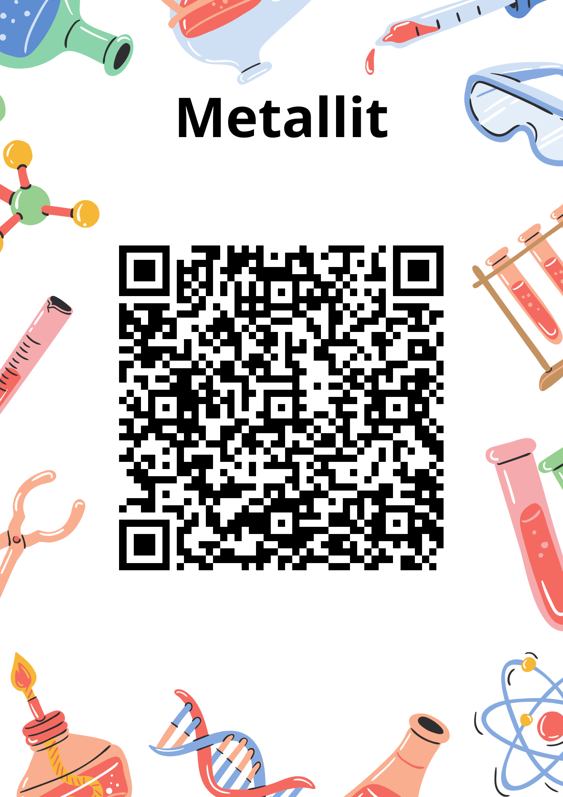
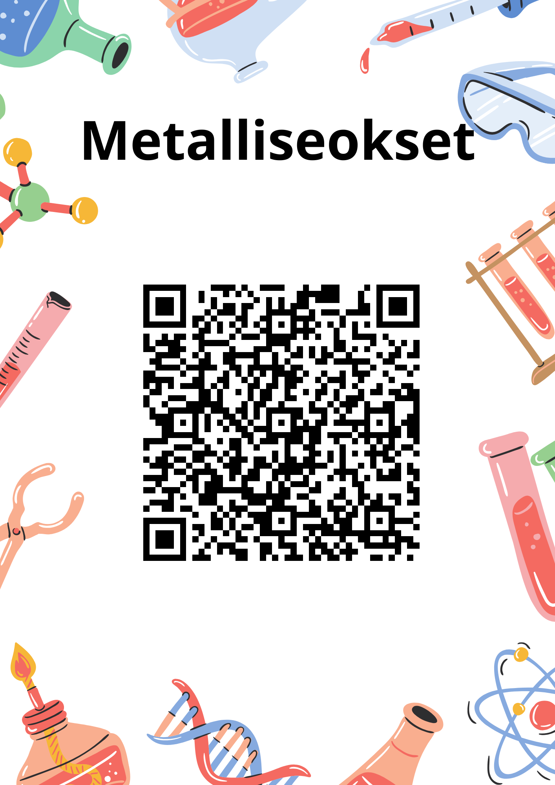
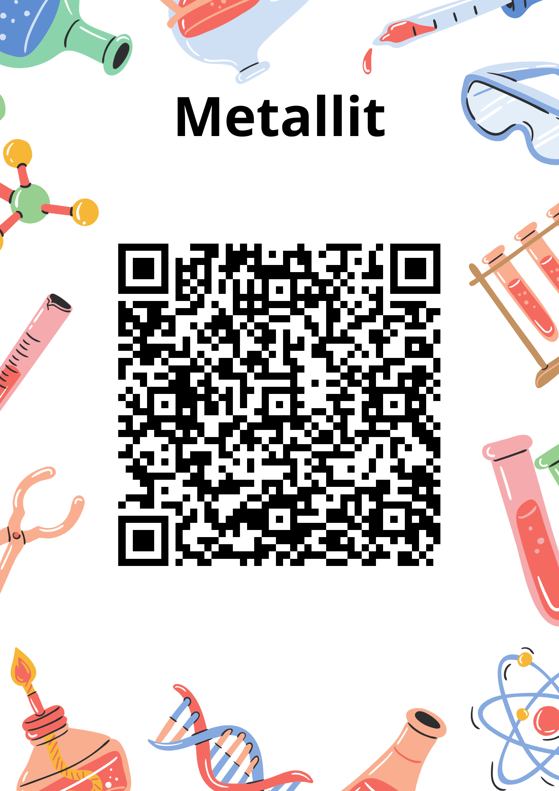
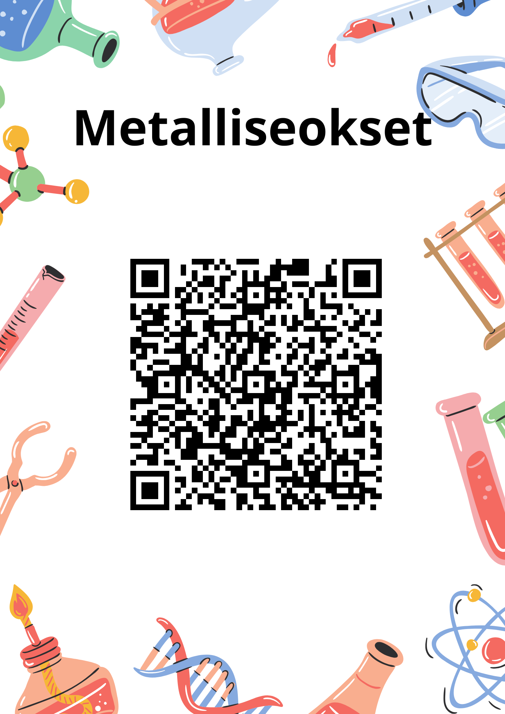

Oppimistehtävän näkökulmaksi on valittu opettajanäkökulma.
Oppimistilanteessa lomakkeita hyödynnetään QR-koodisuunnistuksen rastitehtävien välineenä. QR-koodisuunnistuksen kohderyhmänä ovat kahdeksasluokkalaiset, jotka opiskelevat kemiassa maankuoresta löytyviä raaka-aineita. Rastitehtävät liittyvät enimmäkseen metalleihin, vaikka niissä käsitellään myös yleisesti maalajeja ja mineraaleja. QR-koodisuunnistuksessa on viisi rastia, joista kukin liittyy yhteen aiheeseen. Nämä aiheet ovat:
QR-koodisuunnistus on tarkoitus toteuttaa yhdellä 90 minuutin kaksoistunnilla. Ennen oppimistilannetta opettaja on käynyt kiinnittämässä eri puolille koulua tai ulos koulun lähiympäristöön laminoidut QR-koodit, joiden sijainnit hän merkitsee koulun pohjakarttaan. Opettaja monistaa riittävästi kopioita pohjakartasta tai jakaa pohjakartan sähköisesti esim. Google Classroomissa. Oppilaat jakautuvat oppimistilanteen alussa pareiksi. Työpari päättää itse, missä järjestyksessä kiertää rastit. Oppilasparit ja vastaavat lomakkeisiin puhelimen avulla, minkä jälkeen palataan luokkaan. Lomakkeisiin vastaamisessa on tarkoitus hakea vastauksia netistä. Tämä ohjeistetaan oppilaille. Riittää, että toinen parista vastaa lomakkeeseen, jolloin toisen puhelinta voidaan käyttää pelkästään tiedon hakemiseen. Oppilaita ei ohjeisteta nopeuskilpailuun, koska se johtaisi rastitehtävien vastausten arvailuun.
Lomakkeet on toteutettu Google Formsilla. Neljä lomaketta sisältää vain yhden kysymyksen, jossa on linkki Genially-sovelluksella tehtyyn pelilliseen tietovisaan. QR-koodisuunnistus on työtapana melko pelillinen, jolloin myös rastitehtävien olisi hyvä olla pelillisiä. Lomakkeella on kuitenkin tärkeä merkitys, koska Genially ei tarjoa oppimisanalytiikkaa. Kun oppilaat ovat läpäisseet Genially-tietovisan, he saavat koodisanan, joka annetaan lomakkeen kysymyksen vastauskenttään. Lomakkeen avulla voidaan siten kontrolloida, että oppilaat tekevät Genially-tietovisat. Lomakeesta saadaan tietona myös lähetysajat, jolloin opettaja voi rajallisesti nähdä, mikäli jokin työpari saa vastaukset toiselta työparilta. Tosin rasteja on vähemmän kuin oppilaspareja, joten lomakkeita lähetetään väistämättä melko lähekkäisinä aikoina. Metallien valmistukseen liittyvä lomake on vähän erilainen kuin muut lomakkeet. Se sisältää lyhyen videon, josta on yksi monivalintakysymys ja kaksi avointa kysymystä.
Genially-tietovisalinkin sisältävät lomakkeet antavat välittömän palautteen lomakkeen lähetyksen jälkeen. Ne kertovat palautteena, onko annettu koodisana oikein ja kertovat oikean koodisanan. Oikea koodisana on lisätty lomakkeisiin kolmella kirjoitusasulla, pienillä kirjaimilla, isoilla kirjaimilla ja isolla alkukirjaimella. Videon sisältävä lomake antaa välittömän palautteen monivalintakysymyksestä. Siinä oleviin avoimiin kysymyksiin ei kuitenkaan ole automaattista tarkistusta. Avoimiin kysymyksiin saa kuitenkin malliratkaisut välittömästi palautteena. Automaattinen tarkistus ei toimi pitkissä avoimissa vastauksissa. Lomakkeet keräävät sähköpostiosoitteet, jolloin opettaja saa tiedon vastaajasta. Oppilaat pitää kuitenkin ohjeistaa vastaamaan koulun GMAIL-sähköpostiosoitteella. Lomakkeelle voi myös edellyttää kirjautumisen koulun GMAIL-sähköpostiosoitteella, jolloin ohjeistusta ei tarvita. Google Forms ei mahdollista Genially-tietovisan upotusta. Mikäli lomakkeen kirjoittaisi HTML5-editorissa itse, voisi tietovisat upottaa, mikä lisäisi lomakkeiden selkeyttä. YouTube-videon upotus onnistuu kuitenkin myös Google Formsissa. Seuraavat ominaisuudet olisivat siis ihanteelliset lomaketekniikalle tässä oppimistilanteessa:
Vaikka Google Formsissa on puutteita upotuksen osalta, on sen käyttö perusteltua Googlen ympäristöjä käyttävässä peruskoulussa. Lomakkeen rakenne on oppilaille tuttu, eikä vastaajan tarvitse täydentää nimeään lomakkeisiin. HTML5-kieltä kirjoittamalla lomakkeen tekeminen olisi myös paljon työläämpää opettajalle. Verkkosisällön upotus on kuitenkin melko rajallista myös muissa valmiissa lomaketyökaluissa. Esim. Moodleen voi lisätä H5P-upotuksia mutta kovin monipuolisesti verkkosisältöä ei sinnekään voi upottaa. Verkkosisällön upotus onnistuu Peda.net-ympäristössä, kun kirjoittaa HTML5-kieltä. Microsoft Forms ja Webropol eivät mahdollista verkkosisällön upotusta.
Oppimistilanteessa on tavoitteena tutustua metalleihin ja hieman muihinkin maankuoren aineisiin. Metalleihin tutustutaan niiden ominaisuuksien ja käyttökohteiden näkökulmista. Ympäristön kestävä kehitys on myös merkittävä näkökulma oppimistilanteessa. Kestävää kehitystä käsitellään koko metallin elinkaaren näkökulmasta. Työskentelytaitojen osalta harjoitellaan yhteistyön tekemistä työparin kanssa ja tiedon hakemista. Tieto- ja viestintäteknologiaan liittyen harjoitellaan tietolähteiden käytön lisäksi QR-koodien lukemista. Perusopetuksen opetussuunnitelman perusteissa mainitaan sivuilla 394-395 seuraavat oppiainetavoitteet kemialle vuosiluokille 7-9:
T3 toteutuu oppimistilanteessa, koska metalleja käytetään oppille tutuissa käyttökohteissa. T4 toteutuu oppimistilanteessa, koska metalleja ja niiden elinkaarta käsitellään kestävän kehityksen näkökulmasta. T9 ja T12 toteutuvat oppimistilanteessa, koska tieto- ja viestintäteknologiaa käytetään tiedon hankkimiseen tietolähteistä. T14 toteutuu, koska oppimistilanteessa tutustutaan metallien ominaisuuksiin.
Oppimistilanne sisältää myös perusopetuksen laaja-alaisen osaamisen tavoitteiden suuntaista toimintaa. Laaja-alaisen osaamisen tavoitteita on mainittu perusopetuksen opetussuunnitelman perusteissa sivuilla 20-24. Tavoite L1 toteutuu oppimistilanteessa, koska ajatteluun ja oppimaan oppimiseen sisältyy tiedon hankkiminen. Tavoite L4 toteutuu, koska oppimistilanteessa tulkitaan videota ja muita tietolähteitä monilukutaitoa kehittäen. Tavoite L5 toteutuu, koska oppimistilanteessa tutustutaan tieto- ja viestintäteknologian käyttöperiaatteisiin. Tavoite L7 toteutuu, koska kestävä kehitys on vahvasti mukana lomakkeiden sisällöissä.
 Maalajit ja mineraalit

Metallit

Metalliseokset
Maalajit ja mineraalit

Metallit

Metalliseokset
 Metallit ja ympäristö
Metallit ja ympäristö
 Metallien valmistus
Metallien valmistus